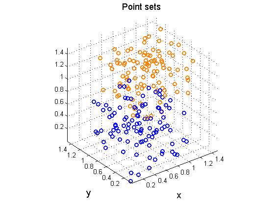
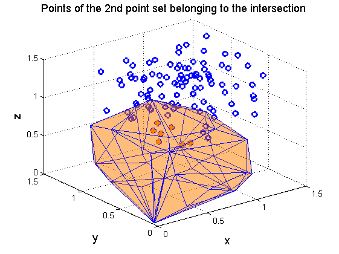
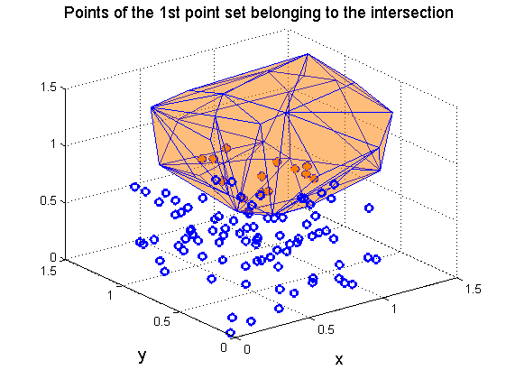
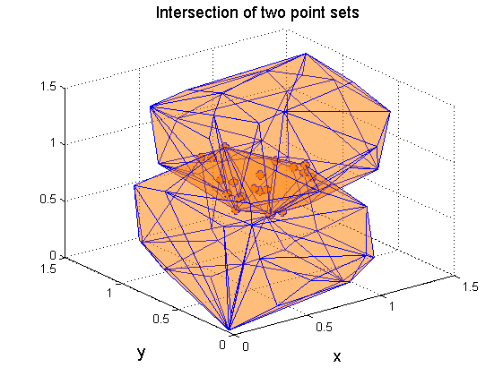

Intersection of two 3D scattered point sets
Contents
Introduction
In this example, two 3-dimensional random point sets are given. The basic problem of finding the intersection of the two point sets is addressed here. To answer this, the points of both point sets which lie in the interior of the intersection of the convex hulls of the two point sets must be found. To achieve this, use of the plane coefficients of the two convex hulls is made, thus showing their necessity in computational geometry calculations.
Initial data
Set the random number generator.
rng(1);
Define the first scattered point set.
points1=rand(100,3);
Define the second scattered point set.
points2=0.5+rand(100,3);
Plot the first and second point sets.
figure('Name','Point sets','NumberTitle','off') scatter3(points1(:,1),points1(:,2),points1(:,3),... 'marker','o','MarkerEdgeColor',[0 0 1],'LineWidth',2) hold on scatter3(points2(:,1),points2(:,2),points2(:,3),... 'marker','o','MarkerEdgeColor',[1 0.5 0],'LineWidth',2) xlabel('x','FontSize',13); ylabel('y','FontSize',13); title('Point sets','FontSize',13) axis equal
Processing
Find the plane coefficients of the convex hull of the first point set.
[chull1,cf1,df1]=convhull_nd(points1);
Find the points belonging to the second point set that are inside the convex hull of the first point set.
inconvhull1=~any(cf1*points2'+df1(:,ones(1,size(points2,1)))>0,1); inter_points1=points2(inconvhull1,:);
Find the plane coefficients of the convex hull of the second point set.
[chull2,cf2,df2]=convhull_nd(points2);
Find the points belonging to the first point set that are inside the convex hull of the second point set.
inconvhull2=~any(cf2*points1'+df2(:,ones(1,size(points1,1)))>0,1); inter_points2=points1(inconvhull2,:);
Find the intersection of the two point sets.
inter_points=[inter_points1;inter_points2];
Plots
Plot the convex hull of the first point set (points in filled orange and edges in blue), the points of the second point set (in blue circles) and the points of the second point set belonging to the intersection of the two point sets (blue circles with orange asterisks).
figure('Name','Points of the 2nd point set belonging to the intersection','NumberTitle','off') trisurf(chull1,points1(:,1),points1(:,2),points1(:,3),... 'FaceColor',[1 0.5 0],'EdgeColor',[0 0 1],'FaceAlpha',0.3); hold on scatter3(points2(:,1),points2(:,2),points2(:,3),... 'marker','o','MarkerEdgeColor',[0 0 1],'LineWidth',2) scatter3(inter_points1(:,1),inter_points1(:,2),inter_points1(:,3),... 'marker','*','MarkerEdgeColor',[1 0.5 0],'LineWidth',2); xlabel('x','FontSize',13); ylabel('y','FontSize',13); zlabel('z','FontSize',13); title('Points of the 2nd point set belonging to the intersection','FontSize',13)
Plot the convex hull of the second point set (points in filled orange and edges in blue), the points of the first point set (in blue circles) and the points of the first point set belonging to the intersection of the two point sets (blue circles with orange asterisks).
figure('Name','Points of the 1st point set belonging to the intersection','NumberTitle','off') trisurf(chull2,points2(:,1),points2(:,2),points2(:,3),... 'FaceColor',[1 0.5 0],'EdgeColor',[0 0 1],'FaceAlpha',0.3); hold on scatter3(points1(:,1),points1(:,2),points1(:,3),... 'marker','o','MarkerEdgeColor',[0 0 1],'LineWidth',2) scatter3(inter_points2(:,1),inter_points2(:,2),inter_points2(:,3),... 'marker','*','MarkerEdgeColor',[1 0.5 0],'LineWidth',2); xlabel('x','FontSize',13); ylabel('y','FontSize',13); title('Points of the 1st point set belonging to the intersection','FontSize',13)
Plot the convex hulls of the two point sets (points in filled orange and edges in blue) and the points belonging to their intersection (blue circles with orange asterisks).
figure('Name','Intersection of two point sets','NumberTitle','off') trisurf(chull1,points1(:,1),points1(:,2),points1(:,3),... 'FaceColor',[1 0.5 0],'EdgeColor',[0 0 1],'FaceAlpha',0.3); hold on trisurf(chull2,points2(:,1),points2(:,2),points2(:,3),... 'FaceColor',[1 0.5 0],'EdgeColor',[0 0 1],'FaceAlpha',0.3); scatter3(inter_points(:,1),inter_points(:,2),inter_points(:,3),... 'marker','o','MarkerEdgeColor',[0 0 1],'LineWidth',2) scatter3(inter_points(:,1),inter_points(:,2),inter_points(:,3),... 'marker','*','MarkerEdgeColor',[1 0.5 0],'LineWidth',2); xlabel('x','FontSize',13); ylabel('y','FontSize',13); title('Intersection of two point sets','FontSize',13)
Contact author
(c) 2014 by George Papazafeiropoulos First Lieutenant, Infrastructure Engineer, Hellenic Air Force Civil Engineer, M.Sc., Ph.D. candidate, NTUA
Email: gpapazafeiropoulos@yahoo.gr
Website: http://users.ntua.gr/gpapazaf/